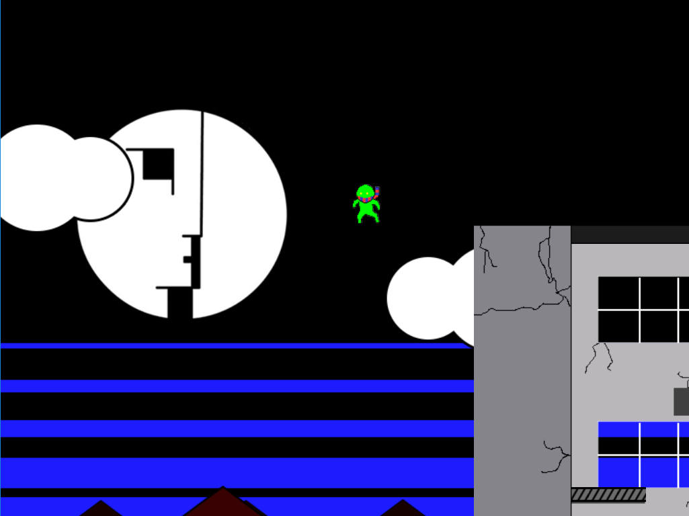
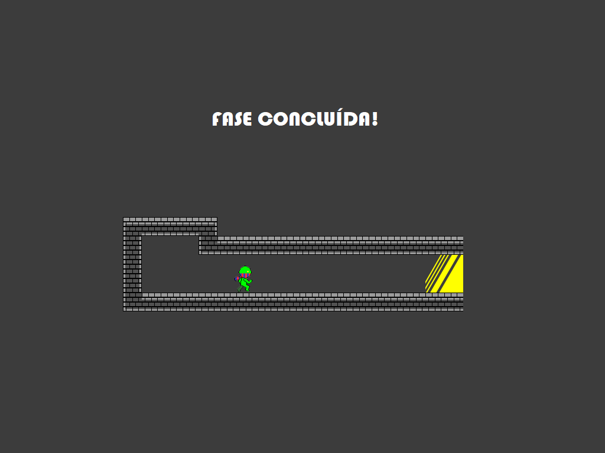
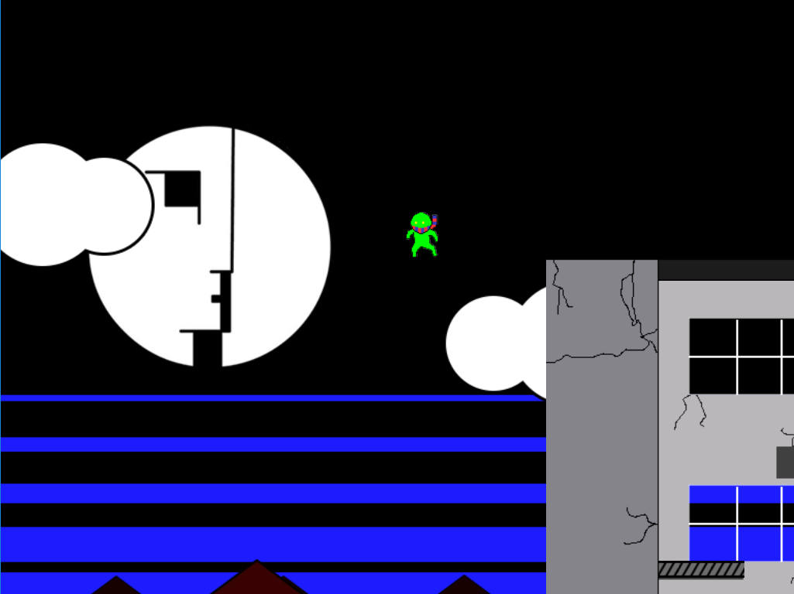
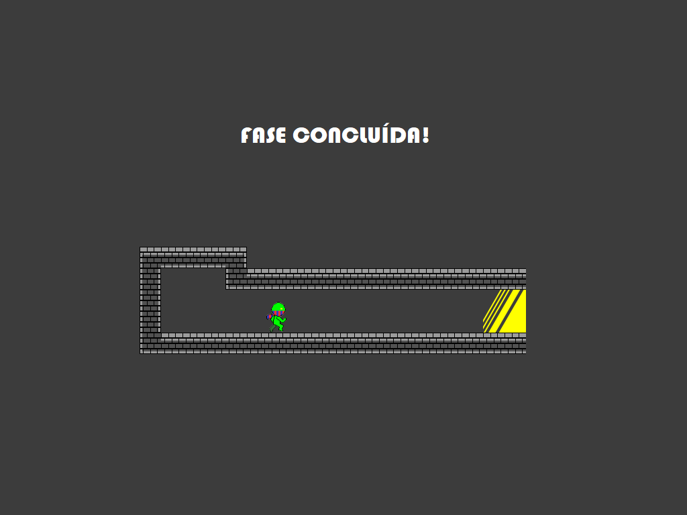

A história se passa em um planeta bicromático, sendo um lado azul e outro vermelho. Seus habitantes, incapazes de aceitar suas diferenças, vivem em conflito por tanto tempo que o planeta desaprendeu o significado da palavra “paz”, bem como as vantagens da convivência com o diferente.
Neste cenário, o jogador controla Green. Nosso protagonista é uma divergência na lógica das cores que forma a identidade visual do planeta RGB (inclusive visualmente), bem como um pacifista que rejeita o destino de conflito e violência que se apresenta a frente de qualquer um que ali resida.
Sendo um advogado pela resolução pacífica dos conflitos, Green colocará à prova suas habilidades para sobreviver e transitar em zonas de guerra devastadas pelo conflito, lidando com seus “inimigos” sem recorrer à violência.

 


